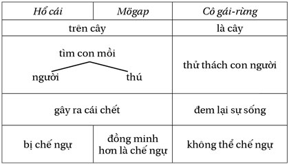

Đừng nằm ì trên giường trừ khi bạn có thể kiếm ra tiền ở đó.
– George Burns
BẠN MUỐN THU NHẬP THỤ ĐỘNG? 7 TỶ NGƯỜI KHÁC CŨNG THẾ
Nguyên tắc thứ tư là Nguyên tắc Thời gian, và nó làm sáng tỏ mối quan hệ nhân quả giữa thời gian và thu nhập của bạn. Bạn không cần dùng cả đời để đổi lấy thu nhập.

Nguyên tắc Thời gian có hai phần. Phần đầu tiên là bạn phải tìm cách tạo ra giá trị mà không cần phải chính bạn có mặt ở đó. Ví dụ, cuốn sách này vẫn tồn tại cho dù tôi có mặt hay không. Trái lại, nếu bạn buộc phải có mặt để tạo ra giá trị, thu nhập của bạn sẽ ngưng lại khi bạn không có mặt.
Yếu tố thứ hai là sự tách biệt. Cái đích cuối cùng trong hành trình khởi nghiệp là hệ thống kinh doanh tự hoạt động không cần bạn phải có mặt, cho bạn tự do lựa chọn làm những gì mình muốn. Đây là cách bạn kiếm được thu nhập bằng cả ngày công của người khác ngay khi vừa ngủ dậy, trước cả khi uống cà phê.
Tuy nhiên, Nguyên tắc Thời gian là nguyên tắc dễ gây hiểu nhầm nhất. Thay vì sử dụng thời gian đúng cách, thời gian lại bị lạm dụng.
Tại sao? Bởi vì nguyên tắc này là chìa khóa để mở ra ước mơ của bất kỳ doanh nhân nào: thu nhập thụ động.
Như tôi đã đề cập, tôi thích và ghét một số người trên diễn đàn của mình.
Ở đó, đa số là những người tốt, nhưng có một nhóm nhỏ rất tệ. May mắn cho tôi là những người này cũng nhanh chóng biến mất. Họ là những người thích thu nhập thụ động nhưng không quan tâm đến việc tạo ra giá trị và đóng góp cho xã hội. Tôi hay nghe những người này nói:
Hãy thực tế. Đó không phải là cách bạn có thể kiếm được thu nhập thụ động.
Khi những người này không tìm được “lối tắt” nào, họ biến mất. Khi họ nhận ra cần có nỗ lực hàng ngày (nguyên tắc Quá trình) để tạo ra thu nhập thụ động, họ chuồn ngay, quay về với công việc làm thuê mà họ chán ghét, xem tivi và mua vé số để trông chờ vào may mắn.
Vấn đề với những doanh nhân “nửa vời” này là chỉ tập trung vào Nguyên tắc Thời gian để tìm kiếm thu nhập thụ động mà bỏ quên hoàn toàn các nguyên tắc khác.
NHỮNG HIỂU BIẾT SAI LẦM VỀ THU NHẬP THỤ ĐỘNG
Thu nhập thụ động nghe có vẻ đơn giản. Nhưng đơn giản không có nghĩa là dễ có được.
Nó không đơn giản là tiền kiếm được một cách dễ dàng mà không phải nỗ lực và khắc phục khó khăn. Bất kỳ doanh nhân nào tôi biết đang có thu nhập thụ động ngày hôm nay, họ đều trải qua một hành trình dài với quyết tâm và nỗ lực phi thường.
Nó không phải là làm vài chương trình podcast, phỏng vấn vài ba người hay đưa lên Apple store một vài cái app lập trình cẩu thả.
Để thỏa mãn Nguyên tắc Thời gian – kiếm được thu nhập thụ động, bền vững lâu dài – cần rất nhiều tháng, có thể nhiều năm với nỗ lực phi thường. Tôi đang nói đến hành trình dài, làm mười giờ mỗi ngày trong cả tuần. Không có chuyện tuần làm việc bốn giờ đâu.
Tôi đã có được thu nhập thụ động từ gần hai mươi năm nay, nhưng để làm được như thế không đơn giản. Trong doanh nghiệp đầu tiên của tôi, tôi cần rất nhiều năm để có thể đạt được thu nhập thụ động. Hãy hỏi bạn của tôi và họ sẽ nói cho bạn biết. Tôi dành thời gian làm việc, nhiều ngày chẳng ra ngoài và chỉ ăn mì Ramen, uống nước tăng lực Red Bull.
Còn diễn đàn và công ty xuất bản? Một lần nữa, tôi phải mất nhiều năm. Khi mới bắt đầu diễn đàn, tôi là người viết bài chính vì chưa có nhiều thành viên. Tôi còn tự bình luận trên các bài viết của mình. Đôi khi tôi tự nói chuyện với chính mình. Cần rất nhiều thời gian chứ không phải ngồi mơ mộng phì phèo xì gà mà thu nhập thụ động tự đến.
Những doanh nhân “nửa vời” tập trung vào thu nhập thụ động chỉ tạo ra ảo tưởng. Một phần nguyên nhân là do lười biếng.
Mục đích kinh doanh của bạn phải là tạo ra sản phẩm xuất sắc. Chính sản phẩm xuất sắc là tiền đề cho bạn có được thu nhập thụ động. Tuân thủ Nguyên tắc Thời gian nhưng đừng lạm dụng nó quá mức. Khi có được sản phẩm xuất sắc, thu nhập thụ động sẽ đến một cách tự nhiên.
HỆ THỐNG TẠO DỰNG GIÁ TRỊ BỀN VỮNG
Để tuân thủ Nguyên tắc Thời gian, ban đầu, trong ngắn hạn, hãy quên nó đi. Thay vào đó, tập trung vào việc xây dựng hệ thống tạo dựng giá trị bền vững trong dài hạn.
Về căn bản, hệ thống tạo dựng giá trị bền vững sẽ giúp bạn có được thời gian tự do. Nó có thể được tạo ra từ: sản phẩm, một trò chơi, chuỗi nhà hàng, một ứng dụng, một trang web, hệ thống nhân sự, một loạt sách, hay bất kỳ hệ thống nào có thể tự hoạt động.
Nếu Nguyên tắc Thời gian là một cái cây ăn trái, hệ thống tạo dựng giá trị bền vững chính là hạt giống, trong khi trái ngọt chính là thu nhập thụ động. Khi bạn tập trung vào chăm sóc, nuôi dưỡng hạt giống là hệ thống tạo dựng giá trị bền vững , cuối cùng bạn sẽ có được trái ngọt là thu nhập thu động. Và bạn sẽ không có được trái ngọt nếu ban đầu không gieo hạt.
Ví dụ, cuốn sách của tôi chính là một hệ thống tạo dựng giá trị bền vững . Khi tôi xuất bản nó dưới dạng sách giấy hay ebook, nó tồn tại dưới dạng một sản phẩm có thể được bán thông qua nhiều kênh phân phối. Nó tồn tại mà không cần tôi phải có mặt. Tôi có thể đã chết mà sách thì vẫn đang bán. Nó giống như những con robot, nó tự hoạt động không cần tôi. Ngay khi bạn mua sách, tôi kiếm được một khoản thu nhập nhỏ. Ai mà biết được lúc đó tôi đang làm gì: có thể đang ngủ, tập thể dục hay đi khám răng.
Một ví dụ khác là trang web của tôi. Nó hoạt động 24/7 mà không có bất kỳ lời than phiền nào. Tôi có thể đã ra đi nhưng nó vẫn tiếp tục tồn tại. Còn diễn đàn của tôi thì sao? Nó cũng là một hệ thống tạo dựng giá trị bền vững khác tự hoạt động liên tục không cần sự có mặt của tôi. Có thể có ngày tôi làm việc mười hai tiếng và chỉ kiếm được 200 đô-la, nhưng cũng có ngày làm hai tiếng và kiếm được 2.000 đô-la. Khi bạn hiểu được sức mạnh của hệ thống tạo dựng giá trị bền vững và sự hoạt động 24/7 của nó, bạn sẽ thấy việc đánh đổi thời gian để lấy thu nhập là một cách rất lỗi thời.
SÁU HỆ THỐNG TẠO DỰNG GIÁ TRỊ BỀN VỮNG
Có sáu hệ thống tạo dựng giá trị bền vững có khả năng tạo ra thu nhập thụ động. Một số tự động và đơn giản, nhưng một số cần nhiều thời gian hơn để tạo dựng.
HỆ THỐNG VỐN
Thông qua nguyên tắc về vốn, hệ thống vốn chính là mục đích cuối cùng của chúng ta. Nó là hệ thống có tính thụ động mạnh nhất – nhưng nó không phải là kinh doanh. Về căn bản, hệ thống vốn chính là cho thuê vốn – thu nhập đều đặn từ lãi suất gởi ngân hàng, cổ tức và hợp tác đầu tư.
Đa số các khoản thu nhập hàng năm của tôi đến từ hệ thống này. Và nếu tôi không kinh doanh nữa, hệ thống này sẽ cho tôi thu nhập đủ sống. Hàng tháng, không cần phải động tay động chân vào, tôi vẫn nhận được hàng ngàn đô-la thu nhập từ lãi suất ngân hàng và cổ tức. Tôi chỉ dành khoảng vài giờ hàng năm để kiểm tra các khoản đầu tư này.
Tuy nhiên, hệ thống tiền này và lãi suất gộp không thể dùng để làm giàu trừ khi số tiền đầu tư đủ lớn. Hãy nhớ lại, dùng lãi suất gộp để làm giàu là một kịch bản không khả thi. Nó chỉ là lý thuyết và bỏ qua các yếu tố khác. Tuy nhiên, chúng ta không dùng thị trường chứng khoán hay lãi suất gộp để tạo ra hệ thống tiền; chúng ta dùng kinh doanh để làm điều đó.
Kinh doanh của tôi tạo ra thu nhập lớn để xây dựng hệ thống vốn, không phải từ chứng khoán hay quỹ đầu tư. Hệ thống vốn không hiệu quả với số tiền không đủ lớn. Với 1 ngàn đô-la thì lãi suất ngân hàng 5% còn chưa đủ để trả phí điện thoại hàng tháng. Nhưng nếu 5% của 10 triệu đô-la sẽ cho bạn cuộc sống dư dả với thu nhập 500 ngàn đô-la hàng năm. Để xây dựng hệ thống vốn, bạn cần phải có số tiền đủ lớn.
Lãi suất gộp không hiệu quả cho đến khi chúng ta có số tiền đủ lớn. Bất kỳ đồng nào tiết kiệm được lúc này chính là tiền đề để có được tự do sau này, để có được sự lựa chọn làm những gì bạn muốn.
HỆ THỐNG SẢN PHẤM SỐ
Hệ thống phổ biến nhất để xây dựng hệ thống tạo dựng giá trị bền vững là hệ thống sản phẩm số. Nó là hệ thống nội dung hay thông tin có thể lan rộng và tồn tại lâu dài. Chúng rất dễ tạo dựng và do đó cạnh tranh cũng rất gay gắt. Ví dụ:
HỆ THỐNG PHẦN MỀM
Kế đến là hệ thống phần mềm dùng để giải quyết vấn đề, làm cho tiện lợi và đôi khi là dành cho giải trí. Nó bao gồm:
HỆ THỐNG SẢN PHẨM HỮU HÌNH
Đó là các sản phẩm hữu hình được bán thông qua các kênh phân phối. Bởi vì nó không cần nhiều hỗ trợ nên nó là hệ thống tạo dựng giá trị bền vững phổ biến thứ ba. Ví dụ:
HỆ THỐNG CHO THUÊ
Đó là một dạng sản phẩm cho thuê, bao gồm:
HỆ THỐNG NHÂN SỰ
Đó là một hệ thống sản phẩm hay dịch vụ đòi hỏi phải có nhân viên để vận hành. Nó có thể bao gồm rất nhiều người vận hành một nhà hàng, hoặc chỉ có một mình bạn với vai trò là người tư vấn. Ví dụ:
Để cung cấp cho bạn một vài ý tưởng về cách thức hoạt động của hệ thống này trong mô hình khởi nghiệp UNSCRIPTED, sau đây là các hệ thống tạo dựng giá trị bền vững của tôi:
Tất cả những hệ thống này hoạt động liên tục không ngừng nghỉ để tạo thu nhập cho tôi.
Điều không may là, trong cách làm kinh doanh thông thường, không ai dạy chúng ta phải định hướng đến hệ thống tạo dựng giá trị bền vững mà chỉ đổi thời gian lấy thu nhập. Khi bạn ngưng làm việc và đi du lịch, nguồn thu nhập cũng ngừng lại. Nếu thu nhập của bạn phụ thuộc vào thời gian của mình, bạn đang gặp rắc rối to.
HỆ THỐNG HỖ TRỢ
Một phần khác của hệ thống tạo dựng giá trị bền vững là cấu trúc các hoạt động hỗ trợ, quảng bá và bán hàng cần phải tự vận hành 24/7 và tách biệt hoàn toàn với thời gian của bạn.
Ví dụ, khi tôi đang viết các dòng này, tôi có rất nhiều các hoạt động hỗ trợ đang tự diễn ra. Đó là hàng trăm bài phỏng vấn của tôi trên mạng Internet, nó tự hoạt động và giúp tôi bán sách.
Vào năm 2011, tôi có làm một bài phỏng vấn với một chuyên gia tiếp thị rất nổi tiếng là Pat Flynn. Buổi phỏng vấn diễn ra khoảng bốn mươi lăm phút, nhưng sáu năm sau, vẫn có người mua sách khi xem buổi phỏng vấn đó. Đó chính là giá trị bền vững – không chỉ là tạo ra giá trị mà còn cho bạn khả năng tiếp cận đến người khác một cách lâu dài, ổn định.
Một ví dụ khác chính là diễn đàn của tôi. Nó có hàng trăm bài tôi viết sau nhiều năm. Nó vẫn tồn tại ở đó. Rất nhiều lần độc giả mua sách vì đọc những bài viết ấy.
Tương tự như thế với các bài viết từ các thành viên. Tóm lại, hệ thống bán hàng diễn ra như sau:
1. Độc giả tìm kiếm thông tin về tác giả từ Google.
2. Tìm thấy và vào diễn đàn của tôi.
3. Đọc các thông tin.
4. Đọc các đánh giá.
5. Và quyết định mua sách.
Tôi nghĩ mỗi bài viết trên diễn đàn của tôi mang lại thu nhập không dưới 25 ngàn đô-la. Và tôi không chỉ có một mà là hơn ba mươi ngàn bài.
Hệ thống này cũng ảnh hưởng đến cách tôi sử dụng thời gian. Ví dụ, tôi thường được mời phỏng vấn trên radio. Nó thường diễn ra khoảng hai mươi phút. Tuy nó có thể giúp tôi quảng bá nhưng tôi thường từ chối. Tại sao? Nó không để lại giá trị bền vững. Những buổi phỏng vấn kiểu này sẽ chỉ tồn tại trong thời gian ngắn.
Tuy thế, nếu bạn đang phát triển kinh doanh thì tôi khuyên bạn không nên bỏ qua. Hãy nhớ là để có thể làm những gì mình muốn, trước hết bạn phải làm những gì mình không muốn.
Để chứng minh cho thu nhập từ hệ thống của tôi, đây là danh sách các nguồn thu nhập đều đặn:
Mỗi cấu trúc này tạo thành hệ thống tạo dựng giá trị bền vững. Nó tồn tại tách biệt với thời gian của tôi và tự vận hành, bao gồm cả các hệ thống hỗ trợ. Thời gian tôi bỏ ra cho hệ thống này chỉ khoảng vài phút.
Ví dụ, để đưa sách lên bán tại Amazon, tôi chỉ mất bảy phút để đóng gói và gửi đi thông qua UPS. Khi nó đến kho Amazon, mọi thứ tự vận hành thông qua hệ thống này. Mỗi kiện sách có ba mươi hai cuốn và lợi nhuận là 6 đô-la, tôi kiếm được 192 đô-la cho mỗi kiện. Đó có thể là số tiền không lớn nhưng nếu tính tỷ suất lợi nhuận so với thời gian bỏ ra thì nó rất ấn tượng – 677 đô-la mỗi giờ.
CHI PHÍ ĐỂ TẠO DỰNG HỆ THỐNG GIÁ TRỊ BỀN VỮNG
Thu nhập thụ động gần 700 đô-la mỗi giờ là ước mơ của bất kỳ doanh nhân nào. Tuy nhiên, để làm được như thế không đơn giản là chỉ cần bỏ vốn ra.
Nghịch lý là nó cần thời gian. Bạn không thể dành vài giờ viết sách có chất lượng làng nhàng mà có thể bán được. Sản phẩm tồi không thể tồn tại lâu dài.
Nguyên tắc nền tảng của toàn bộ cuốn sách này là để cuối cùng tạo ra thu nhập cả tiền bạc và thời gian tự do.
Rất nhiều công việc kinh doanh, đặc biệt là dịch vụ, mất rất nhiều thời gian trong giai đoạn đầu. Nếu bạn muốn tạo ra chuỗi nhà hàng để bán nhượng quyền, bạn sẽ không thể tìm thấy lợi nhuận sau vài năm trước khi hệ thống có thể vận hành trơn tru. Giống như những hạt giống, hệ thống tạo dựng giá trị bền vững cần phải được chăm sóc trước khi nó có thể bắt rễ và sinh hoa trái.
Mục đích của bạn khi tạo dựng hệ thống giá trị bền vững là tạo ra thu nhập ngay nhưng bền vững lâu dài để có thể tự vận hành tách biệt khỏi thời gian của bạn.
TẠI SAO LẠI BÁN CON GÀ ĐẺ TRỨNG VÀNG?
Nếu bạn có con gà đẻ trứng vàng và nó có thể tiếp tục sinh lợi lâu dài. Câu hỏi là: Bây giờ bạn có nên bán con gà đó?
Đầu tiên, tôi đánh giá khả năng bền vững của hệ thống này. Liệu nó có thể tồn tại bao lâu? Để giải quyết bài toán này, bạn cần phải bỏ ra thời gian, thuê mướn nhân viên để duy trì và cải tiến nó. Điều này có thể giúp kéo dài thêm vài năm. Tuy thế, trong thời đại Internet ngày nay, mọi thứ thay đổi rất nhanh. Nếu bạn ngủ quên và không chăm sóc kỹ lưỡng con gà của mình, cạnh tranh sẽ lấy mất nó.
Kế đến, để duy trì, bạn cần có nhân viên, bạn có muốn thay đổi vai trò thành người quản lý?
Cuối cùng, bạn có thể chuyển hoàn toàn những thu nhập này thành hệ thống vốn? Như đã đề cập, lãi suất gộp không thể giúp bạn làm giàu nhưng nó sẽ là công cụ vô cùng hữu hiệu để tạo dựng thu nhập thụ động nếu có số vốn đủ lớn. Nếu nó có thể giúp bạn tạo ra thu nhập bền vững đủ để có cuộc sống tự do bạn muốn, tại sao lại không?